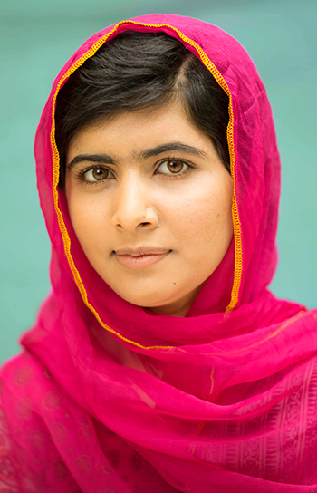

Malala Yousafzai
Malala es una activista a favor de los derechos civiles, especialmente los de las mujeres en el valle del río Swat, en Pakistán, donde el régimen talibán tiene prohibido la asistencia a la escuela de las niñas. Sus ideales le llevaron a recibir un disparo en la cabeza cuando regresaba en autobús de la escuela a su casa en la ciudad de Mingora. Lejos de echarse atrás, la joven extendió su lucha a nivel mundial. Su labor le llevó a ser premiada con el Nobel de la Paz en 2014. Con tan sólo diecisiete años se convertía en la persona más joven a acceder a ese galardón.